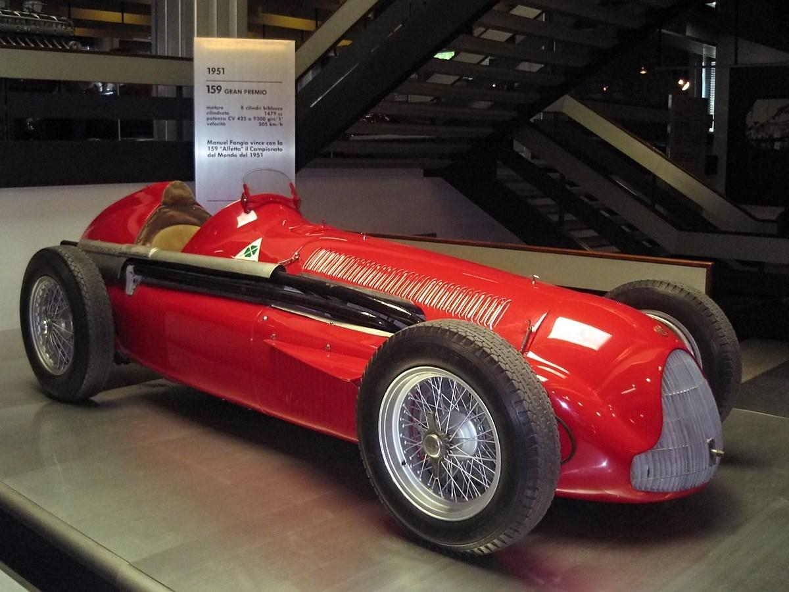
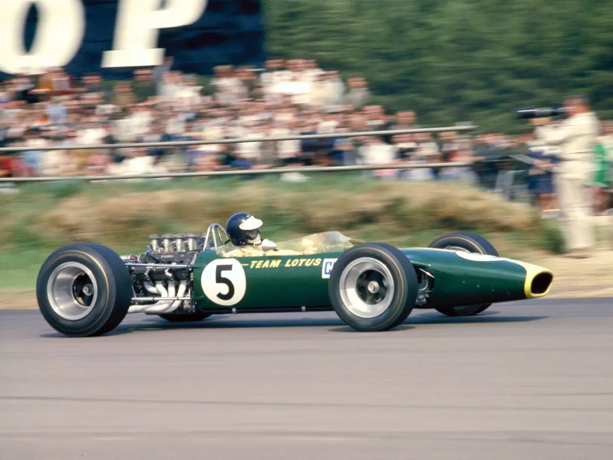
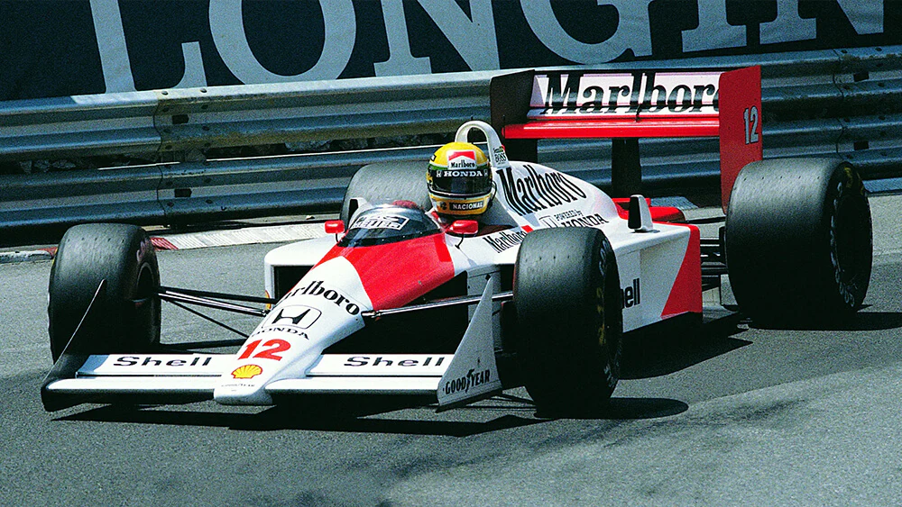
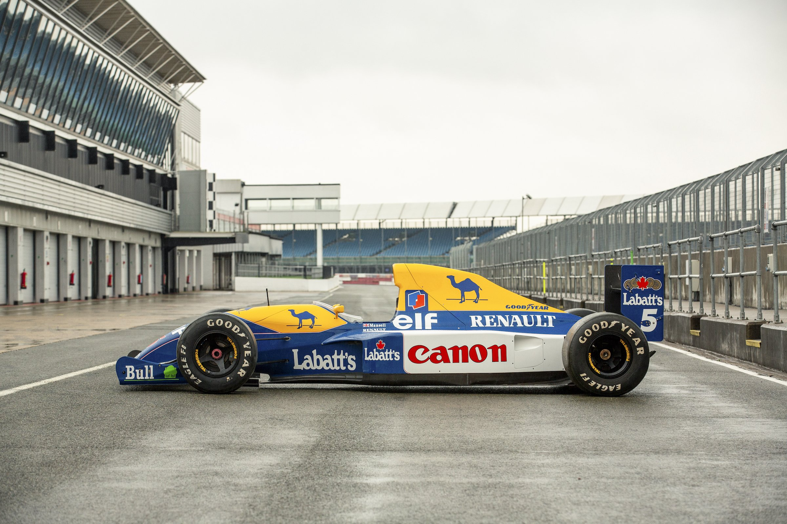
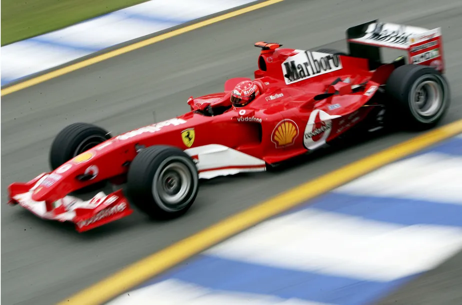
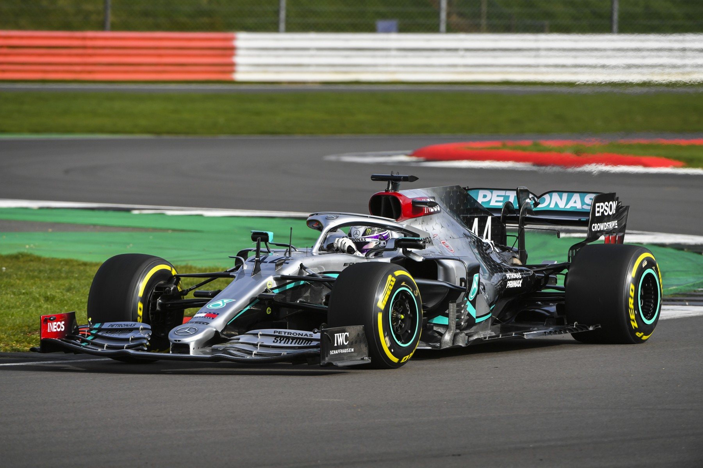
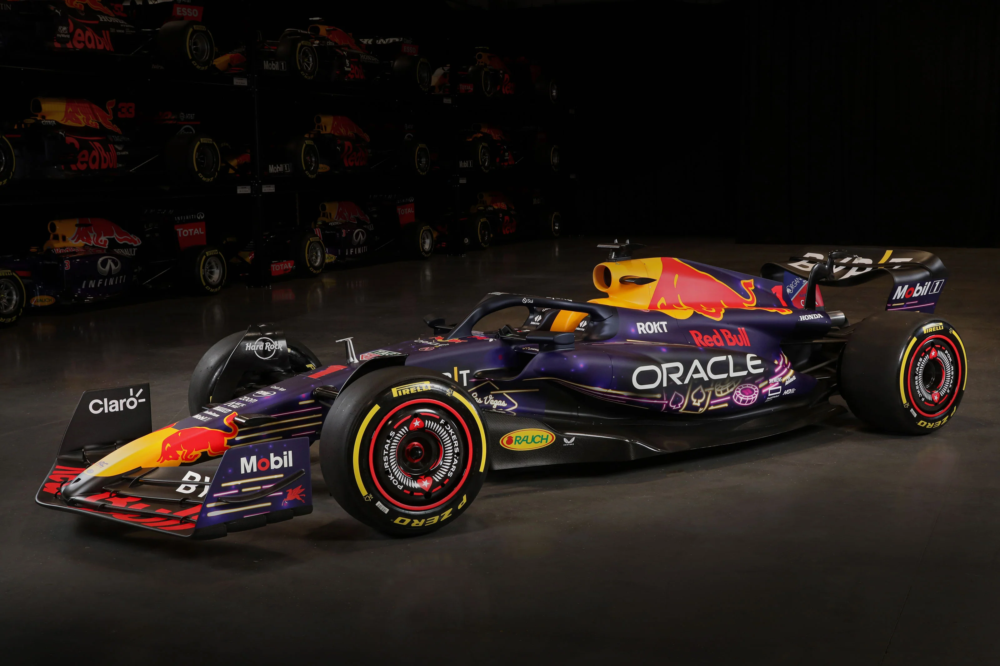

Linha do Tempo
Evolução das máquinas
1950s – O nascimento da velocidade bruta
A década de 1950 foi marcada por carros simples, com motores dianteiros, linhas arredondadas e uma aerodinâmica quase inexistente. As máquinas eram brutais, exigindo controle absoluto dos pilotos em pistas perigosas e mal estruturadas.
Principais avanços:
- Motores de grande cilindrada, mas pouco refinados.
- Início das primeiras experiências com pneus específicos para corrida.
1960s – A revolução do motor traseiro
Nos anos 60, a Fórmula 1 passou por sua primeira grande revolução: os motores migraram para trás, alterando totalmente o equilíbrio dos carros. A engenharia começou a superar a coragem bruta, e o conceito de aerodinâmica surgiu como novo protagonista.
Principais avanços:
- Motores traseiros e centralizados.
- Início do desenvolvimento aerodinâmico básico (formas mais "chapadas").
- Primeiros protótipos de asas.
1970s – A era da aerodinâmica e da criatividade

Os anos 70 viram a explosão de criatividade na Fórmula 1. As asas ficaram gigantes, os carros começaram a parecer aviões em miniatura, e o conceito de "downforce" passou a decidir corridas. Era o auge da ousadia.
Primeiros avanços:
- Introdução real do efeito solo (princípio do vácuo no assoalho).
- Aerofólios e asas cada vez mais elaboradas.
- Carros mais largos e baixos para estabilidade.
1980s – O poder do turbo e o limite da engenharia
Década de excessos. Os motores turbo dominaram, com potências absurdas — alguns chegando a 1.400cv em treinos! A tecnologia eletrônica começou a aparecer discretamente. Era a era em que homens tentavam domar monstros.
Primeiros avanços:
- Motores turbo de alta potência.
- Desenvolvimento inicial de eletrônica embarcada (telemetria rudimentar).
- Pneus de compostos mais especializados.
1990s – A inteligência dominando a força
Com a crise dos excessos turbo, os anos 90 focaram no refinamento: carros mais seguros, sistemas eletrônicos mais sofisticados (controle de tração, suspensão ativa) e um novo salto em aerodinâmica e materiais.
Primeiros avanços:
- Controle eletrônico avançado (injeção eletrônica, controle de tração).
- Uso intensivo de fibra de carbono nos chassis.
- Regulamentação mais rigorosa para segurança.
2000s – A era da precisão cirúrgica
Tecnologia de ponta. Os carros se tornaram projetados ao nível molecular: computadores simulavam tudo, desde aerodinâmica até desgaste de pneus. O piloto ainda era essencial, mas a máquina passou a ser uma obra de arte tecnológica.
Primeiros avanços:
- Aerodinâmica detalhada (asas múltiplas, difusores complexos).
- Simuladores e data loggers ultra-avançados.
- Pit stops ultra rápidos e estratégicos.
2010s – A era híbrida e a inteligência artificial
A Fórmula 1 entrou no mundo da tecnologia verde: os motores híbridos combinaram energia elétrica e combustão em busca de eficiência sem perder performance. A estratégia passou a ser quase tão importante quanto a pilotagem.
Primeiros avanços:
- Introdução do sistema KERS e ERS (recuperação de energia).
- Motores híbridos (unidades de potência).
- Avanço brutal em análise de dados e inteligência artificial.
2020s (Presente) – A nova era da eficiência extrema
A Fórmula 1 vive hoje o desafio de unir sustentabilidade e espetáculo: motores ainda mais eficientes, regulamentos que limitam o desenvolvimento para nivelar a competição, e um foco crescente em inovação de materiais e energia limpa.
Primeiros avanços:
- Motores híbridos ultraeficientes e menor consumo.
- Desenvolvimento de combustíveis sintéticos e biocombustíveis.
- Limitação orçamentária para equilibrar tecnologias.